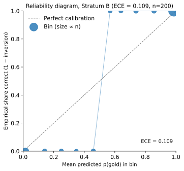
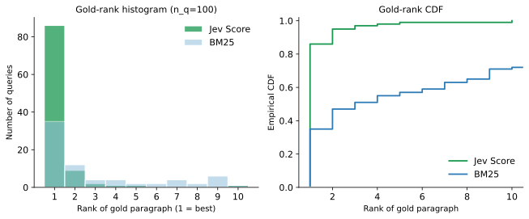
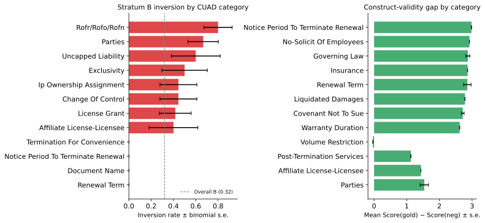
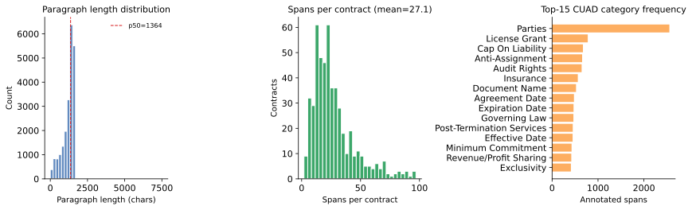
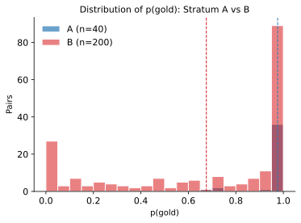
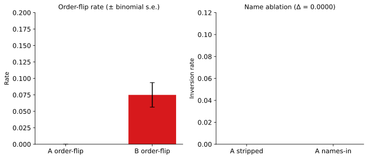
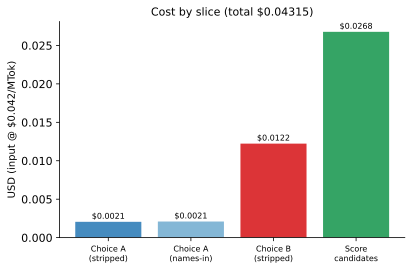
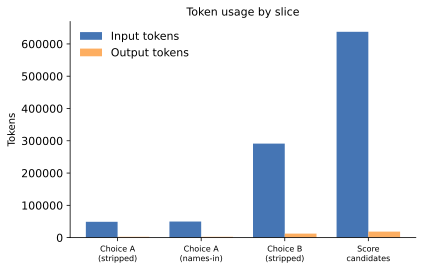
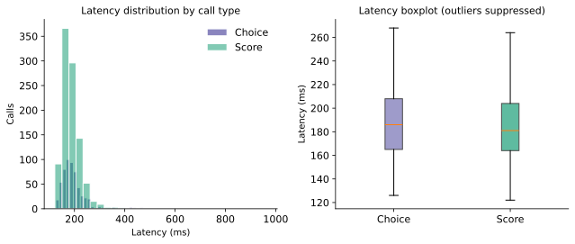

Report
run_id: cuad-jev-2026-09-20 criterion (exact, never paraphrase): more relevant to the requested contract category model: jev-1.13.0 (requested jev-latest) pricing: Jev $0.042 per million input tokens; output free labels: Contract Understanding Atticus Dataset (CUAD) human span annotations only — never from Jev design: Design A (Stratum A certain pairs + Stratum B labeled pairs) + candidate-score lite (Gates 3 and 4)
Artifacts: results/gates.json · results/diagnostics.json · results/cost.json · results/timing.json · results/data_stats.json · results/accuracy_summary.json · results/baseline_literature.json
Teaching-first landing page: OVERVIEW.md. Methods and figures: ANALYSIS.md.
Terms used in this report
The gate table below uses short labels. Each label is defined here before that table. Uncertainty is a standard error (s.e.), never STE.
CUAD / Atticus. The Contract Understanding Atticus Dataset is 510 public commercial contracts with human marks for 41 clause categories (13,823 spans), released by the Atticus Project (Hendrycks et al., 2021; CC BY 4.0). Gold in this bench is those marks only.
TypeSafe Jev Choice and Score. TypeSafe is an application programming interface (API) for typed judgments, not chat. Jev is the judge (jev-1.13.0). Choice returns which of two texts is more relevant to the frozen criterion, with probabilities. Score returns a probability distribution over irrelevant / weakly relevant / relevant / highly relevant; expected score is the probability-weighted index on 0 to 3.
Best Match 25 (BM25). A cheap keyword-overlap ranker. Used to pick same-contract look-alike distractors and as the ranking baseline. Not a neural retriever.
Hard negative; Stratum A; Stratum B. A hard negative is a non-gold paragraph a keyword ranker would surface. Stratum A (n=40) is gold versus a paragraph from a contract with no mark for that category. Stratum B (n=200) is gold versus a Best Match 25 hard negative in the same contract.
Inversion. Both presentation orders are averaged onto p(gold). If p(gold) < 0.5, the judge reversed the human label. That event is an inversion.
Construct validity. Gate 4: under the same category question, mean Score on gold spans versus mean Score on hard negatives. If those means do not separate, the Score axis is not measuring category relevance.
Brier score; reliability; expected calibration error. Brier is mean (p(gold) − 1)², gold treated as the correct side. A reliability diagram bins predicted probabilities against an observed frequency. Expected calibration error is the probability-weighted absolute gap across ten equal-width bins. Gate 5 reports 0.324 under the gold-as-correct convention; the reliability figure’s printed number uses discrete correctness (1 minus inversion) and is 0.109 in diagnostics.
Mean reciprocal rank; recall at k. Reciprocal rank is 1 / (rank of the first gold paragraph). Mean reciprocal rank averages that over 100 queries. Recall at k is the share of queries with gold in the top k.
DeBERTa literature metrics. Published extractive numbers for DeBERTa-xlarge on CUAD (Hendrycks et al., 2021): area under the precision–recall curve 47.8; precision at 80% recall 44.0; precision at 90% recall 17.8. Jaccard ≥ 0.5 is that literature’s span-overlap rule (intersection-over-union at least one half). Not re-run. Different task shape. We do not report a Jaccard number of our own.
Abstract
This report evaluates TypeSafe Jev judgments of contract-clause relevance on the open Atticus contract dataset. The measurement question is whether pairwise Choice and graded Score judgments under the frozen criterion recover human-annotated category spans relative to hard negatives and a Best Match 25 keyword baseline, without using the judge to construct labels. Gate 4 is a construct-validity contrast: mean Score on gold spans versus keyword hard negatives under the same category query, reported with standard errors. Gate 7 cites published extractive DeBERTa-xlarge numbers as a literature difficulty anchor only; this bench does not re-run DeBERTa and uses a different task shape (candidate Score / pairwise Choice versus extractive span highlighting).
Analysis exclusions (pre-registered)
- No post-hoc dropping of inverted Stratum A pairs.
- Gold pairs frozen in
data/pairs/gold_pairs.jsonlbefore any live Jev call; mtime order documented below. - Candidate scoring injects gold spans into the Best Match 25 top-10 when missing so rank is measurable; injection is logged (28 of 100 queries), not treated as keyword retrieval success.
Gates (registered BEFORE any Jev output)
Read each pass line as an ordinary English claim, then the short metric.
| # | Gate in prose | Metric / rule | Pass line |
|---|---|---|---|
| 1 | On the 40 easy pairs, the judge almost never reverses the human label | Stratum A inversion, both presentation orders averaged | inversion ≤ 0.05 PASS/FAIL |
| 2 | On the 200 hard pairs, report how often it reverses and how sharp the probabilities are | Stratum B inversion and Brier on p(gold) | report |
| 3 | When scoring ten keyword candidates, Jev ranks the marked paragraph higher than Best Match 25 does | n=100 queries; gold mean reciprocal rank and recall at 1/3/5 | signal: Jev mean reciprocal rank > Best Match 25 |
| 4 | Under the same category question, marked spans score higher than keyword distractors | mean Score(gold) > mean Score(hard negatives), with standard error | inequality + s.e. |
| 5 | How far p(gold) sits from the gold-as-correct label | Brier and expected calibration error on Stratum B | report |
| 6 | Leaving party names and dates in the easy pairs does not change inversion much | Stratum A re-run with names/dates left in; change in inversion | change ≤ 0.05 PASS/FAIL |
| 7 | Published extractive DeBERTa numbers, for difficulty context only | Area under the precision–recall curve / precision at a given recall / Jaccard rule | report only — not a re-run |
Scoring protocol
- Criterion (exact):
more relevant to the requested contract category - Choice (Strata A+B): Text A / Text B; names and dates stripped for main tables; both orders; inversion on the averaged winner
- Score (candidate set): levels
irrelevant / weakly relevant / relevant / highly relevantto the category description; expected score = Σ i · pᵢ (0-indexed) - Entry:
score.py→runs/jev/; every answer logs tokens +latency_ms - Concurrency ≈ 6; cache under
runs/jev/cache/ - No Haiku / no Grok-as-judge on main tables
- Uncertainty: binomial standard errors for rates; s.e. of the mean (and bootstrap s.e. where previously computed) for continuous summaries
Gold freeze checkpoint
| Item | Path | Status |
|---|---|---|
| Gates pre-registered | REPORT.md (this file) | DONE 2026-09-20 17:30:16 EDT (before any Jev call) |
| Gold pairs frozen | data/pairs/gold_pairs.jsonl | DONE 2026-09-20 17:32:37 EDT |
| PAIR_MANIFEST | data/pairs/PAIR_MANIFEST.md | DONE |
| Preflight cost | results/preflight_cost.json | DONE est $0.050 |
| First live Jev call | runs/jev/answers.jsonl | after gold freeze (score start later than gold mtime) |
Results
Gate pass/fail
| # | Gate | Result | Detail (with standard error where defined) |
|---|---|---|---|
| 1 | Easy-pair inversion | PASS | 0.000 (n=40, s.e. 0.000); inverted: none |
| 2 | Labeled-pair inversion + Brier | report | inversion 0.320 (s.e. 0.033); Brier 0.250 (s.e. 0.026); mean p(gold) 0.676 (n=200) |
| 3 | Candidate Score vs Best Match 25 | PASS_SIGNAL | Jev mean reciprocal rank 0.917 (s.e. 0.021); Best Match 25 0.469 (s.e. 0.041); chance 0.298; recall at 1/3/5 Jev 0.86/0.97/0.99 vs keyword 0.35/0.51/0.57 |
| 4 | Construct validity | PASS | gold mean Score 2.685 (s.e. 0.062, n=100) > negatives 0.555 (s.e. 0.027, n=882); gap 2.130 (s.e. 0.067) |
| 5 | Secondary Brier / expected calibration error | report | Brier 0.250 (s.e. 0.026); expected calibration error 0.324 (n=200) |
| 6 | Name/meta ablation | PASS | stripped inversion 0.000; names-in inversion 0.000; change 0.000 |
| 7 | Literature DeBERTa | report | area under the precision–recall curve 47.8; precision at 80% recall 44.0; precision at 90% recall 17.8 (Hendrycks et al. 2021). Not re-run. Different task shape. |
Inversion tables
| Stratum | n | inverted | inversion (s.e.) | mean p(gold) | mean Brier (s.e.) | order-flip |
|---|---|---|---|---|---|---|
| A certain | 40 | 0 | 0.000 (0.000) | 0.976 | 0.007 (0.004) | 0.000 |
| B labeled | 200 | 64 | 0.320 (0.033) | 0.676 | 0.250 (0.026) | 0.075 |
Inverted A: none.
Figures
How to read each panel is in the caption. Terms (inversion, reliability, mean reciprocal rank, construct validity) are defined in Terms used in this report.












Captions: results/figures/CAPTIONS.md. Tabular diagnostics: results/diagnostics.json.
Cost and timing
| Slice | calls | cache hits | input tok | USD |
|---|---|---|---|---|
choice_names_in_A | 80 | 0 | 49856 | $0.002094 |
choice_stripped_A | 80 | 0 | 48928 | $0.002055 |
choice_stripped_B | 400 | 2 | 291158 | $0.012229 |
score_candidates | 982 | 0 | 637421 | $0.026772 |
| total | 1542 | 2 | 1027363 | $0.043149 |
Overall latency: mean 191.1 milliseconds · median (50th percentile) 182 milliseconds · 95th percentile 258 milliseconds.
Model resolution
First live responses resolved jev-latest → jev-1.13.0.
Gates were written before any Jev API call for run_id cuad-jev-2026-09-20.